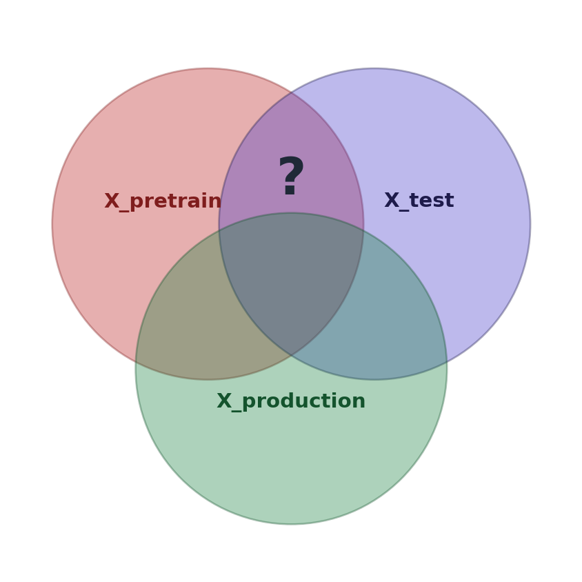
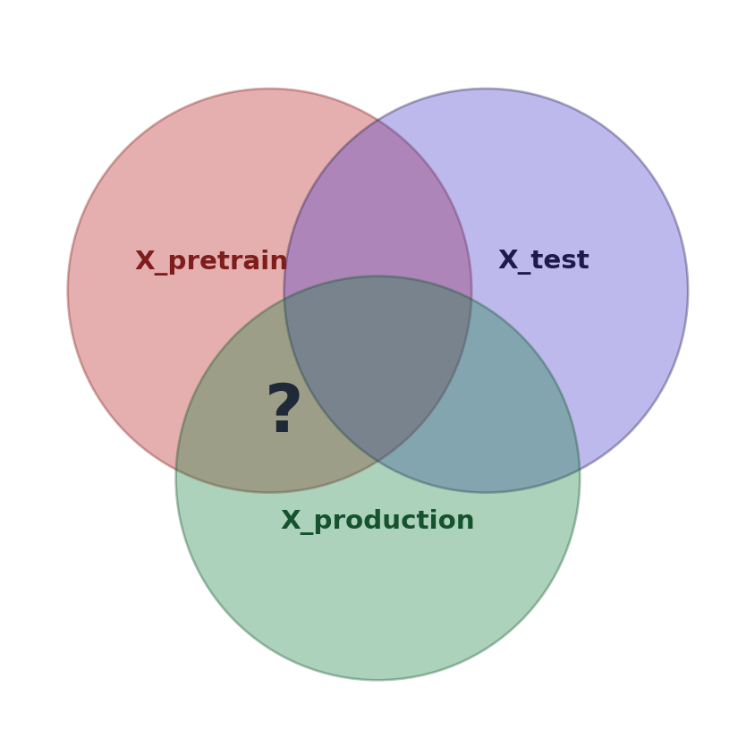

---
config:
theme: neutral
layout: elk
---
flowchart LR
D["Labeled dataset <br> X, y"] --> S{Train / Test <br> split}
S -->|train| TR[Train set]
S -->|test| TE[Test set]
TR --> M{Model training}
M --> F[Fitted model]
TE -->|X_test| F
F -->|y_pred| EV["Evaluation <br> e.g. MAE, AUC"]
TE -->|y_test| EV
EV -.->|proxy for| PP[Production <br> performance]
style PP stroke-dasharray: 5 5,color:#1f2937
Why pretrained models break classic MLOps
pre-trained models
evaluation
mlops
transformers
How pretrained models break the classical MLOps loop. A tour of what changes, and why it matters in practice.
With the advent of pre-trained models, deploying ML/AI models is becoming easier. Most notably, LLMs are now widely used for tasks that previously required training specialised ML models and experts with deep expertise to do so. The same trend is also happening outside of GenAI, with prefitted models such as TabPFN for tabular data and models like Chronos and TiREX in the time-series domain . At the same time, it becomes harder to evaluate the performance of those models reliably, to trace back failure modes, and to react to performance regression.
Chronos: Ansari et al., 2024. TiREX: Auer et al., 2025.
In this article I will discuss the implications of pre-trained models for the traditional model lifecycle (MLOps) and the implicit trade-offs we accept when using pre-trained models.
Supervised Learning pipeline
In the classical supervised-learning setup, we are given a dataset X with known targets y and want to build a model \(f(x) = y\) that can be used to make accurate predictions on unseen data once we deploy it to production.
The general model training pipeline looks like this:
We collect data, do feature engineering, split the data according to our chosen evaluation strategy, train the model on the training data and evaluate on the test data. The implicit assumption is that our evaluation metric is a good proxy for the performance we will obtain once we deploy the model.
Depending on the problem, building a sound validation framework is actually often the most difficult step. Time-series data requires respecting the temporal structure to avoid lookahead bias; clustered data can introduce its own biases if the split ignores cluster boundaries. Also one has to be very careful when calculating aggregate features, to avoid information leakage, meaning we give the model more information than it will have at prediction time. It is generally a good idea to invest the work in a sound evaluation framework upfront, as this allows us to iterate confidently and ensures that performance gains during building also translate to better performance in production.
For more special cases and technical details see our survey article on this topic.
On one hand this setting produces an upfront cost, as we need to spend time building and optimizing the model; on the other hand it gives us complete control over each of the steps.
The model lifecycle (MLOps)
MLOps generalises this pipeline to a continuous loop, which is nowadays the standard approach for using ML models in production:
---
config:
theme: neutral
layout: elk
---
flowchart LR
A[Data <br> collection] --> B
subgraph tp [Training pipeline]
B[Data <br> preparation] --> C[Model <br> training]
C --> D[Evaluation]
end
D --> E[Deployment]
E --> F[Monitoring]
F -.->|drift / decay <br> detected| A
style tp fill:#f3f4f6,stroke:#9ca3af,color:#1f2937
MLOps solves several problems of the static model training pipeline :
The classical reference on these is Quiñonero-Candela et al., Dataset Shift in Machine Learning (MIT Press, 2009).
- Pattern drift: The relationship between X and y changes. This happens more often than one might think, as in supervised learning we typically model correlations not causations and the association structure can easily change. Think of fraudsters changing their behaviour.
- Prior drift: The distribution P(y) changes. Imagine in our training dataset we have an equal number of sick and healthy patients and train our model on this dataset and use it in production on random people where the baseline prevalence is only 0.5%. In this case a moderate false positive rate would lead to a large number of false positive predictions, due to the change of the prior distribution.
- Covariate shift: The distribution of the features P(X) changes significantly, which may lead to a deterioration of the model as the new data points are out of the original training domain.
The main idea is to constantly monitor the data, the model’s behaviour, and, if we have ground-truth y values, the performance in an online fashion. As soon as we see performance regress, we can create an updated dataset and retrain the model on the current data. This also often happens periodically, e.g. retraining once per week. Again the devil is in the detail and setting up a good online evaluation framework can be challenging, due to delayed y values, feature changes such as unknown categories, and technical errors leading to either random or systematic missing values.
However, the MLOps loop gives us a tool that, once set up, provides us with confidence that the model is working, or if not, we at least know about it.
What are pretrained models?
Pretrained models are trained on very large datasets that span a wide range of possible applications, rather than on the specific data of one downstream task. Those datasets can be artificial as is the case for TabPFN, real data (GPT) or hybrids (RealTabPFN).
TabPFN uses a sophisticated approach to first generate random causal structures, which are then used to create datasets \(D_{train}\) and \(D_{test}\) based on this complex distribution. Then a transformer model is trained for zero-shot prediction: holding \(D_{train}\) in context the model predicts \(y_{test}\) in a single forward pass. The error gradient for this zero-shot prediction is then back propagated. This process is repeated on millions of simulated datasets, with a large variety of dataset sizes, causal and correlation structures and resulting distributions.
The original TabPFN paper is Hollmann et al., 2023
The amazing part is that the model is able to deliver strong predictions on unseen data without needing any training or adjustment of the weights whatsoever, just by knowing what relationships between X and y typically look like and activating this “knowledge” at prediction time. The predictions are pulled towards their prior, induced by the pre-training .
Prior-fitted networks approximate Bayesian inference Müller et al., 2022 — Transformers Can Do Bayesian Inference.
Also LLMs fall into this model class and generally the same principles apply: when generating an answer the LLM will tend towards what it saw during pre-training. The more context you provide the less influential the unconditional prior will become, which is also why methods such as few-shot learning and very detailed descriptions tend to work better, as it conditions on the specific task.
Three domains which are especially promising for pre-trained models are:
- Small data domain: typical examples are medical datasets, where obtaining samples is expensive, or univariate time-series forecasting with not much history. The strong prior helps here to focus on the important patterns in the data.
- No data domain, where we need to make decisions on the fly, and where currently LLMs are extensively used for many different tasks. In this case classical ML is just not applicable.
- Online learning, where data arrives only gradually. This area is still a bit under-explored but extremely promising: using pretrained models to provide a warm start, e.g. in Reinforcement Learning, could speed up convergence greatly.
In those areas I expect pre-trained models to really take off in the next few years, as they allow applications which were not really possible before.
Pre-trained models and MLOps
The most crucial change when using pre-trained models is that the training data is no longer something we control or even observe — it lives entirely on the model provider’s side and is reflected in the model’s weights, which are themselves typically more or less a complete black box.
At inference time we only supply a context, which for an LLM is the prompt, for other models the training dataset:
---
config:
theme: neutral
layout: elk
---
flowchart LR
subgraph vendor [Black Box]
XP["X_pretrain <br> ???"] --> M[Pretrained model]
end
XC["X_context <br> e.g. prompt"] --> M
M --> Y[Prediction]
style XP stroke:#b91c1c,stroke-dasharray: 5 5,color:#b91c1c
style vendor fill:#f3f4f6,stroke:#9ca3af,color:#1f2937
No model training is involved; instead the model is used as is, either by hosting it locally or via an API (fine-tuning will be covered later on in this article).
On one hand this greatly simplifies things, as it removes the necessity to collect more data, do heavy feature engineering , perform hyper-parameter tuning and model training. This allows us to apply ML to topics without much groundwork beforehand.
Although the effect of feature engineering on pre-trained models is still a bit blurry, more on that later.
However there is also a price for this, as it leads to a couple of new problems, which we will analyse in the following sections individually.
Test data contamination
In the classical setup, defining a good evaluation approach is the bread and butter of the data scientist and something we have control over. Loosely speaking, one tries to avoid any overlap between train and test, as well as other spill-over effects, e.g. due to look-ahead bias. However, when using pretrained models, we simply don’t know which data they were trained on.

One case where this could happen is in the domain of time-series forecasting. Imagine forecasting a financial time-series using a pretrained transformer, such as TiREX or Chronos, and using the last year as the hold-out test set. If recent data was used in their training and the last year happened to include a crash, chances are that this information will be used implicitly by the model when forecasting other time-series, leading to a look-ahead bias.
The more extreme example is test data just being in the training data. This is often cited as the reason why LLM benchmarks can’t really be trusted anymore: LLMs scrape basically the whole internet, and even assuming honesty on the companies’ side, benchmark data can easily slip through and make its way into the training data . Realistically, this is the likely explanation for the exponential gains on benchmarks but much more modest gains in practice.
Documented systematically in Sainz et al., 2023 — NLP Evaluation in Trouble. Contamination-resistant benchmarks like LiveBench and LiveCodeBench try to address this by continuously refreshing test data.
The key point is that we simply cannot know which data was used for training, and can only make an educated guess at best when evaluating performance on our evaluation dataset. As the training data for pre-trained models is typically proprietary, it is virtually impossible to run any checks.
One might argue that as long as production data can also be found in the training data, this reflects true performance — but the argument falls apart when we assume a dynamic world. If our environment changes over time, then it becomes less and less likely that this correspondence holds.
Out-of-domain
Generally most ML models are much better at interpolating than extrapolating. This means that models will perform better in areas of the distribution space which were explored during training.

A prominent example of this is LLMs asked about recent events, after the training cut-off. If no tools are allowed, the model will either refuse an answer or just hallucinate one.
The same can be seen in time-series data, where pre-trained models perform worse on patterns that were not included in the training data. Early foundation models, for instance, have been documented to struggle with simple sine/cosine patterns (Hollmann et al., 2024).
For normal ML models, one can observe feature drift (see above) as a proxy for out-of-domain production data. For pre-trained models this is again impossible, due to the opacity of the training data.
Unknown target prior
In the classical setup, the training-time class prior \(P_{train}(y)\) is something we explicitly chose: it’s the empirical distribution of y in our training set. The model learns to use this prior implicitly when making predictions, which is also at the core of methods for imbalanced data.
During normal MLOps, one can monitor \(P_{prod}(y)\) and raise an alarm if it starts to diverge from \(P_{train}(y)\). However, again this is not possible here. To make things worse, a prior for \(P(y)\) might not even be well-defined, e.g. for LLMs. This also prevents techniques such as calibration to be used in this setting.
The topic of Reinforcement Learning from Human Feedback and supervised fine-tuning for LLMs is also a problem here, as it skews the prior from the training data (which is basically the entirety of the internet) towards the answers deemed desirable by the companies. While this can be a good thing to improve performance or avoid dangerous behaviour, it can also induce unwanted bias. Again, the main problem here is that the post-training is opaque and bias can only be observed empirically for a limited number of test cases, not on principle.
Besides performance the opaqueness of the prior also creates problems for fairness and auditing: ML models are well-known to reproduce biases from the training data and pre-trained transformer models are no different here. Techniques to counteract biases in ML often control on certain “protected attributes” to measure and counteract bias against certain populations. But again this requires knowledge of the training data. To make things worse, companies can use post-training to voluntarily induce bias, with Grok being a troublesome example. In this case, as we can’t look at the post-training procedure we can only try to infer the prior from the models behaviour.
Retraining
Besides the problem of measuring performance and detecting drift, pre-trained models are also typically limited in the options we have to improve performance when deterioration is found. The most common options are:
- Supervised fine-tuning: if the model is open source, or the provider offers fine-tuning functionality, we can try to improve the model’s performance by using our own data to skew it towards our domain. In the above terms we would condition the model more strongly on our data, partly overriding the prior distribution. While supervised fine-tuning can be very effective, it is also quite difficult to do well, as it often leads to unwanted side effects such as overfitting on our training dataset.
- Improve the context: for TabPFN we can provide more training data, which improves performance. The same is true for LLMs, where techniques such as few-shot learning can be used to improve performance on our task.
- Feature engineering: use transformations of the training data to make the X, y mapping more explicit. This topic feels very underexplored for tabular pre-trained models. It is often claimed in papers that feature engineering is not required anymore, but in personal experiments I still found it to make quite a difference. For LLMs this could be seen as context engineering, which is also known to have a strong impact on the results.
To summarise, while we still have some tools available, the options to counteract performance regression when it is found are more limited.
Deployment
For model deployment as well, pre-trained models change the equation a bit and pose a set of new challenges that one should keep in mind.
Computational cost
Pre-trained models greatly reduce the upfront cost as they do not need to be trained and optimized. However, at inference time, they are typically much more costly compared to specialised models trained on the given task only. This appears to be an inherent property, at least of current transformer architectures, as the parameter overhead that enables meta-learning is reflected in a much larger overall network size. This is also reflected in a larger inference time.
Therefore, when implementing a model for a specific task in the long term, provided that there is enough data to train a specialised model, the trade-off becomes one between the upfront investment, the inference cost, and the performance, and should be weighed carefully.
Dependency risk
As you also do not control the model directly, especially for API-based consumption, this creates a dependency risk on the model’s company. Those dependency risks are at least three-fold:
- Outages or unavailabilities: recently there have been quite a few outages from the large LLM providers, and also the blocking of Claude Mythos outside of the US. Those risks are completely out of your control.
- Versioning and limited rollbacks: LLM versions often change silently and there is no guarantee that previous versions stay exactly the same either.
- Cost: costs are changing, especially for large LLMs, and there is no guarantee that the software that is viable today is still viable tomorrow if the model providers decide they need to end their subsidising and charge more per token in order to stay competitive.
Compliance
For API-based models, one needs to send data to the model provider, introducing huge compliance risks that need to be taken into account. This can be offset by hosting the models yourself in the case of open models, or by relying on vendors such as Microsoft to provide compliance-conformant models.
Where does this leave us?
Pretrained models allow us to build solutions for many problems that would previously have been either too expensive or impossible due to a lack of data. But there is a hidden cost resulting from giving up control of the training data.
If we have enough data to learn from and the budget to do so, I would probably still go with a classic ML model, such as a deep learning or gradient boosting model. Clean evaluation and confidence in the approach, as well as being able to explain them , trump 1–2% more accuracy most of the time. I think the biggest problem is that we can’t know for sure when the model will perform well, which completely offsets any small gains.
Although those models are also black-box methods by nature, one can deduce behaviour from the training data, as well as use interpretability methods such as SHAP.
However, pre-trained models provide a great out-of-the-box baseline and are an amazing tool for exploration and rapid prototyping.
As a rough decision rubric:
---
config:
theme: neutral
layout: elk
---
flowchart TD
Q1{Enough labeled data <br> to train from scratch?}
Q2{Compliance or auditing <br> constraints?}
Q3{Any labeled data <br> at all?}
CLASS[Classic ML <br> deep learning / boosting]
PRE[Pretrained model <br> with care for evaluation]
HYBRID[Pretrained as baseline <br> classic ML if data allows]
LLM[LLM / zero-shot <br> pretrained model]
Q1 -->|yes| Q2
Q1 -->|no| Q3
Q2 -->|yes| CLASS
Q2 -->|no| HYBRID
Q3 -->|yes, but little| PRE
Q3 -->|no| LLM
style CLASS fill:#dcfce7,stroke:#15803d,color:#1f2937
style PRE fill:#fef3c7,stroke:#b45309,color:#1f2937
style HYBRID fill:#e0e7ff,stroke:#4338ca,color:#1f2937
style LLM fill:#fee2e2,stroke:#b91c1c,color:#1f2937
In all cases though, pretrained models are a great tool to validate the use-case quickly before committing to a full classical pipeline.
For small data domains, I expect adoption to increase rapidly in the next few years, and rightfully so, as the gains in performance are truly impressive here and make it almost impossible to justify not using them without good reasons such as compliance or auditing.